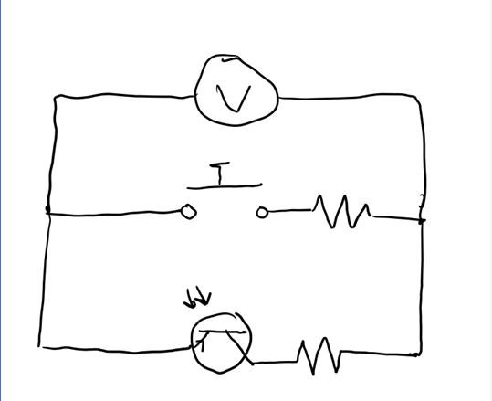

Week 4: Microcontroller programming
<br>
<u>Microcontrollers</u>
This week we were tasked with programming the Arduino board to do something. I decided to build on my 3D printed pump from last week’s assignment and experiment with using sensors to control the speed of the pump.
This would allow me to understand how I could eventually program my float switch to do the same thing with my final project.
I also wanted to use what we had learnt in class about L9110 and experiment how I would use this together with a breadboard when powering a motor.
<u>Button component</u>
I decided to first investigate with a button component that would change the direction of motion of my pump. This doesn’t provide much utility for me but I thought it would be a good starting point considering we went over the button function in class.
<u> Phototransistor sensor </u>
My next goal was to program a phototransistor such that the pump sped up as more light was shone on it. I decided the most simple way to approach this would be to directly take the phototransistor sensor values and input that as motor speed.
<u>Constants</u>
I started off by defining my constants as such:
This time I needed 4 constants because I was including my L9110 A1A, A1B and the two pins for my button and sensor:
<pre><code>
// constants won't change. They're used here to set pin numbers:
const int buttonPin = 8; // the number of the pushbutton pin
const int sensorPin = A0; // the number of the sensor pin
const int A1A = 3; // define pin 3 for A-1A (PWM Speed)
const int A1B = 4; // define pin 4 for A-1B (direction)
</code></pre>
I then created an initial point for my variables that will change:
<pre><code>
// variables will change:
int buttonState = 0;
int sensorfixed = 0;
int sensorState = 0;// variable for reading the pushbutton status
</pre> </code>
I had to create two variables for sensor state, because I had to remap the values the sensor was picking up, and will go into more detail on this in the next section.
Below is my void setup, taking what we learnt from class that direction should be digital while speed should be analog form:
<pre><code>
void setup() {
Serial.begin(9600);
pinMode(A1A, OUTPUT); // specify these pins as outputs
pinMode(A1B, OUTPUT);
analogWrite(A1A, 0); // start with the motors off
digitalWrite(A1B, LOW);
// initialize the sensor pin as an input:
pinMode(sensorPin, INPUT);
// initialize the pushbutton pin as an input:
pinMode(buttonPin, INPUT);
}
</code></pre>
Troubleshooting
At first, my button was not working. I would hold it down and instead of changing direction it would simply stop the motor. I realized that I forgot what we learnt in class that I had forgot to implement what we learnt in class and needed to invert the sensor state for one of my functions as shown below:
<pre><code>analogWrite(A1A, 255-sensorState) </code></pre>
Success!
The phototransistor was really tricky since the motor was very sensitive to any power supplied by the Arduino. My first error was that I connected it in the wrong direction thinking that the transistor acts the same as a diode (when in reality it should be connected in the opposite direction). 55Kassia showed me about the “Serial.print” function to view the values I was getting from the phototransistor. I realized that the max values were in the 500 range, with the highest observable max at 510. However the motor max is only at 255, so I thought this was also preventing the motor from detecting the differences in light if most values were already above 255. I used the map function and created a new variable “sensor” fixed. As shown below:
<pre><code>
sensorState = analogRead(sensorPin)/2;
buttonState = digitalRead(buttonPin);
Serial.println(sensorState);
sensorfixed = map(sensorState, 1, 510, 0, 255);
if (buttonState==HIGH){
digitalWrite(A1B, HIGH);
analogWrite(A1A, 255-sensorState); // Speed to match photosensor
}else{
digitalWrite(A1B, LOW);
analogWrite(A1A, sensorState); // Speed to match photosensor
</code> </pre>
Success!
Finally it should be notes that at first my phototransistor code was included outside of my if, else statement but I realized that it needed to be embedded within the if else statement because of the inverted speeds that I had mentioned above. This exercise also helped cement my understanding of analog and digital and which to use for each function. Originally, I had used digital mode for everything and this was also interfering with my pump.
Here is my circuit from the breadboard:
<div class = "center">

</div>
I didn’t get to experiment with replacing delay function with millis since there wasn’t any need for delays in my function, but I will be experimenting with this next week!
Final product:
<video width ="300" height="500" autoplay loop muted>
<source src="../05/vid2.mp4" type="video/mp4" />
</video>
<video width ="300" height="500" autoplay loop muted>
<source src="../05/vid1.mp4" type="video/mp4" />
</video>